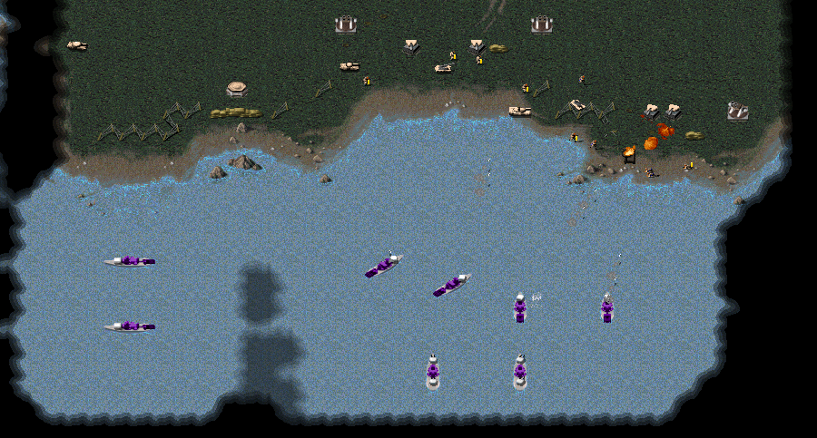

The Iris War
The Iris War is a series of campaign scenarios for the RTS game OpenRA: Combined Arms, mostly as a way of helping me learn about game scripts and using an API (specifically the OpenRA Lua API). All of the scripts in these missions were done by me with some inspiration drawn from the original scenarios included with the game. This is also the first time I've tried using AI to create the artwork for the different missions, which is going to really ramp up as I complete more missions.
The project is being updated frequently and can be found at the Github page. Be sure to check back often!